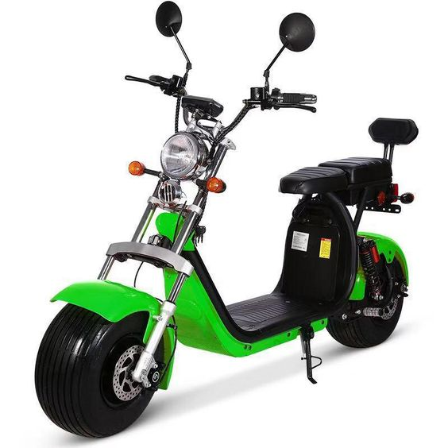
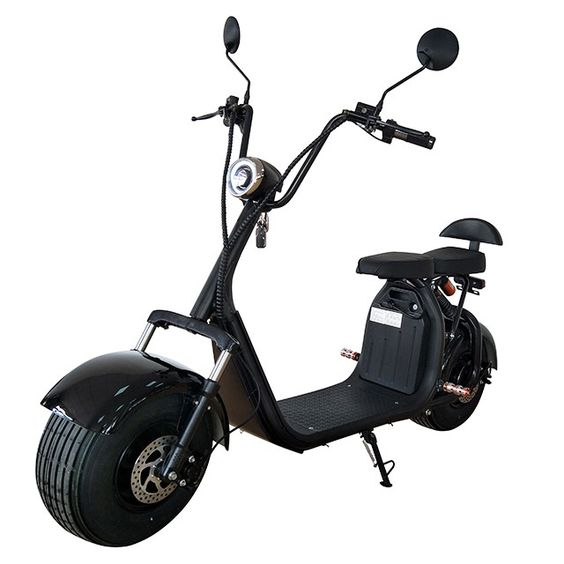
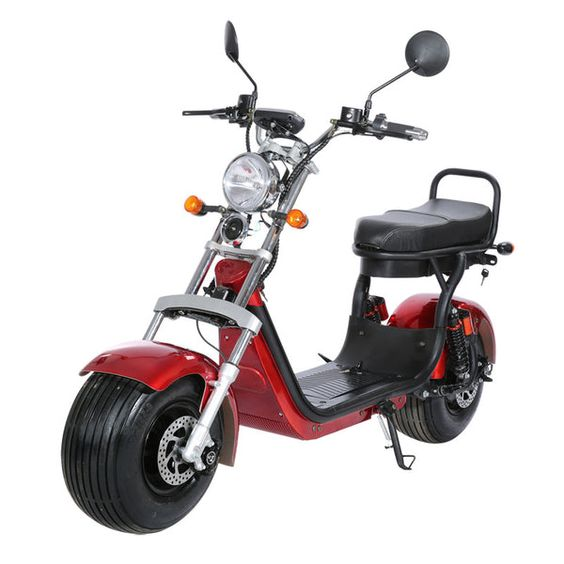

SCOOTER ELÉTRICA Watts W2
A Scooter Elétrica Watts W2 foi feita para quem pensa em soluções de mobilidade urbana com economia. Com ela, você reduz seu tempo de deslocamento e ainda zera a taxa de emissão de CO² do seu transporte. A W2 é sinônimo de agilidade e autonomia para você ir e vir quando quiser. Tudo isso com um estilo próprio e a possibilidade de dividir a experiência com mais alguém.
Preço: R$ 12.990,00
SCOOTER ELÉTRICA Watts W6
A Scooter Elétrica Watts W6 é perfeita para você que deseja mais agilidade e potência nos deslocamentos do dia a dia. Com ela, além de economizar tempo e dinheiro com combustível, você também ajuda o meio ambiente. A Watts W6 tem zero emissão de CO².
Preço: R$18.990,00
SCOOTER ELÉTRICA Watts W7 Mini
Compacta, a Scooter Elétrica Watts W7 Mini chama atenção por onde passa. Com seu design esportivo, ela agrada todos que buscam um jeito ágil de se divertir e ter a experiência de pilotar, em curtas distâncias, com praticidade e segurança. A Watts W7 Mini uniu estilo à mobilidade sustentável com zero emissão de CO².
Preço: R$ 7.990,00